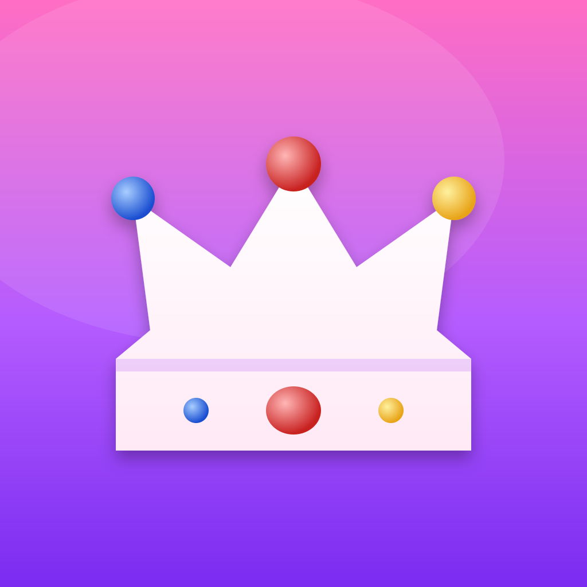
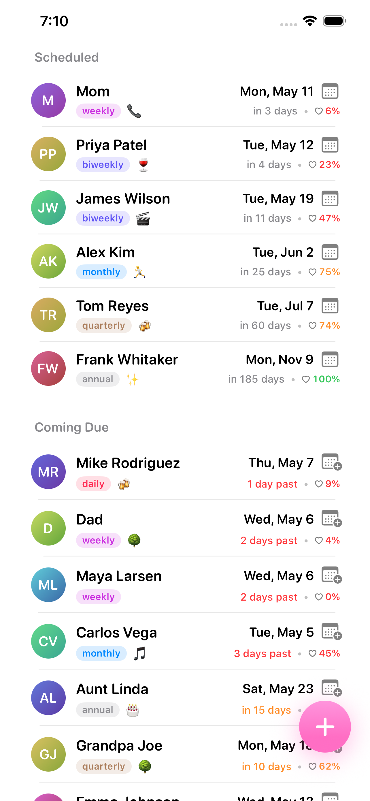

Chumlord
A small iOS app for keeping in touch with friends.
Add the people you want to stay in contact with, set a rough cadence for each (weekly, monthly, whatever), and log a catchup when it happens. The list re-ranks so the friend you're most overdue to call sits at the top.
That's the whole app. No accounts, no notifications, no streaks. Everything stays on your phone.

How the ranking works
Each friend is scored by elapsed time since last contact divided by their target cadence. So a week-late weekly friend outranks a month-late annual friend — overdueness is judged relative to the cadence you set, not in absolute days.
Status
Built by one person as a side project. Not on the App Store yet. If you want to try it, the source is on GitHub.